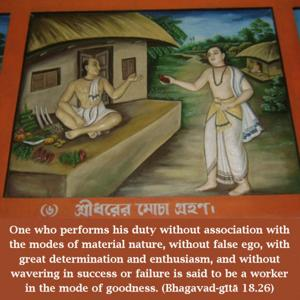
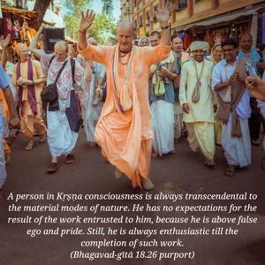

One who performs his duty without association with the modes of material nature, without false ego, with great determination and enthusiasm, and without wavering in success or failure is said to be a worker in the mode of goodness.


A person in Kṛṣṇa consciousness is always transcendental to the material modes of nature. He has no expectations for the result of the work entrusted to him, because he is above false ego and pride. Still, he is always enthusiastic till the completion of such work. He does not worry about the distress undertaken; he is always enthusiastic. He does not care for success or failure; he is equal in both distress and happiness. Such a worker is situated in the mode of goodness.